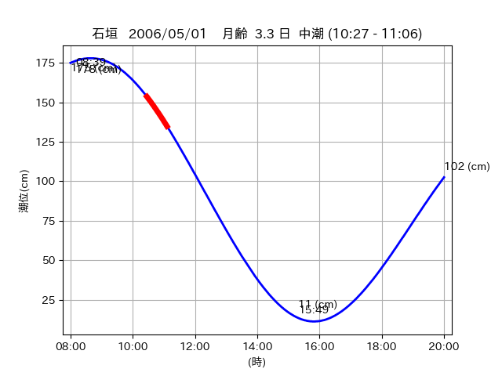
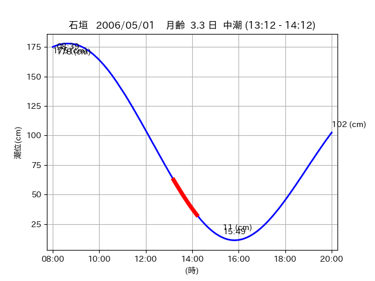
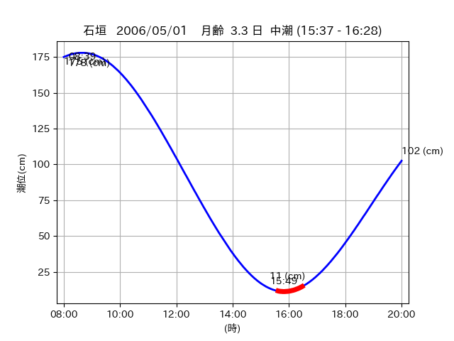

<!DOCTYPE html>
<html>
<head>
    
    <meta http-equiv="content-type" content="text/html; charset=UTF-8" />
    
        <script>
            L_NO_TOUCH = false;
            L_DISABLE_3D = false;
        </script>
    
    <style>html, body {width: 100%;height: 100%;margin: 0;padding: 0;}</style>
    <style>#map {position:absolute;top:0;bottom:0;right:0;left:0;}</style>
    <script src="https://cdn.jsdelivr.net/npm/leaflet@1.9.3/dist/leaflet.js"></script>
    <script src="https://code.jquery.com/jquery-3.7.1.min.js"></script>
    <script src="https://cdn.jsdelivr.net/npm/bootstrap@5.2.2/dist/js/bootstrap.bundle.min.js"></script>
    <script src="https://cdnjs.cloudflare.com/ajax/libs/Leaflet.awesome-markers/2.0.2/leaflet.awesome-markers.js"></script>
    <link rel="stylesheet" href="https://cdn.jsdelivr.net/npm/leaflet@1.9.3/dist/leaflet.css"/>
    <link rel="stylesheet" href="https://cdn.jsdelivr.net/npm/bootstrap@5.2.2/dist/css/bootstrap.min.css"/>
    <link rel="stylesheet" href="https://netdna.bootstrapcdn.com/bootstrap/3.0.0/css/bootstrap-glyphicons.css"/>
    <link rel="stylesheet" href="https://cdn.jsdelivr.net/npm/@fortawesome/fontawesome-free@6.2.0/css/all.min.css"/>
    <link rel="stylesheet" href="https://cdnjs.cloudflare.com/ajax/libs/Leaflet.awesome-markers/2.0.2/leaflet.awesome-markers.css"/>
    <link rel="stylesheet" href="https://cdn.jsdelivr.net/gh/python-visualization/folium/folium/templates/leaflet.awesome.rotate.min.css"/>
    
            <meta name="viewport" content="width=device-width,
                initial-scale=1.0, maximum-scale=1.0, user-scalable=no" />
            <style>
                #map_f7b9f6c8362fbd4e15b332befbe6d428 {
                    position: relative;
                    width: 2048.0px;
                    height: 1600.0px;
                    left: 0.0%;
                    top: 0.0%;
                }
                .leaflet-container { font-size: 1rem; }
            </style>
        
</head>
<body>
    
    
            <div class="folium-map" id="map_f7b9f6c8362fbd4e15b332befbe6d428" ></div>
        
</body>
<script>
    
    
            var map_f7b9f6c8362fbd4e15b332befbe6d428 = L.map(
                "map_f7b9f6c8362fbd4e15b332befbe6d428",
                {
                    center: [24.368, 123.961],
                    crs: L.CRS.EPSG3857,
                    ...{
  "zoom": 12,
  "zoomControl": true,
  "preferCanvas": false,
}

                }
            );

            

        
    
            var tile_layer_89add386ba809bb19c99adf83bed0197 = L.tileLayer(
                "https://cyberjapandata.gsi.go.jp/xyz/seamlessphoto/{z}/{x}/{y}.jpg",
                {
  "minZoom": 0,
  "maxZoom": 18,
  "maxNativeZoom": 18,
  "noWrap": false,
  "attribution": "\u5730\u7406\u9662\u5730\u56f3",
  "subdomains": "abc",
  "detectRetina": false,
  "tms": false,
  "opacity": 1,
}

            );
        
    
            tile_layer_89add386ba809bb19c99adf83bed0197.addTo(map_f7b9f6c8362fbd4e15b332befbe6d428);
        
    
            var marker_8d816a1653921e705df1b307f2681f4b = L.marker(
                [24.3743, 123.9471],
                {
}
            ).addTo(map_f7b9f6c8362fbd4e15b332befbe6d428);
        
    
            var icon_a4b30186bc04c48cb03b86f478ade970 = L.AwesomeMarkers.icon(
                {
  "markerColor": "orange",
  "iconColor": "white",
  "icon": "info-sign",
  "prefix": "glyphicon",
  "extraClasses": "fa-rotate-0",
}
            );
        
    
        var popup_fa9cd6865b823af3b1896deb5d78931c = L.popup({
  "maxWidth": "100%",
});

        
            
                var html_33a6304882352ce7c2fea2e22da3393d = $(`<div id="html_33a6304882352ce7c2fea2e22da3393d" style="width: 100.0%; height: 100.0%;"><table><tr><td></td></tr><tr><td><center>20060501 No.1 </center></table></td></tr></table</div>`)[0];
                popup_fa9cd6865b823af3b1896deb5d78931c.setContent(html_33a6304882352ce7c2fea2e22da3393d);
            
        

        marker_8d816a1653921e705df1b307f2681f4b.bindPopup(popup_fa9cd6865b823af3b1896deb5d78931c)
        ;

        
    
    
                marker_8d816a1653921e705df1b307f2681f4b.setIcon(icon_a4b30186bc04c48cb03b86f478ade970);
            
    
            var poly_line_88283a5e787bdd6ad83279201e6da276 = L.polyline(
                [[24.3743, 123.9471], [24.368, 123.9518]],
                {"bubblingMouseEvents": true, "color": "#00FFFF", "dashArray": null, "dashOffset": null, "fill": false, "fillColor": "#00FFFF", "fillOpacity": 0.2, "fillRule": "evenodd", "lineCap": "round", "lineJoin": "round", "noClip": false, "opacity": 1.0, "smoothFactor": 1.0, "stroke": true, "weight": 3}
            ).addTo(map_f7b9f6c8362fbd4e15b332befbe6d428);
        
    
            var marker_023b46645ee6bd23ad187cae898d7027 = L.marker(
                [24.3682, 123.9597],
                {
}
            ).addTo(map_f7b9f6c8362fbd4e15b332befbe6d428);
        
    
            var icon_ab5913fdbed188725397e4b925a3f3a6 = L.AwesomeMarkers.icon(
                {
  "markerColor": "orange",
  "iconColor": "white",
  "icon": "info-sign",
  "prefix": "glyphicon",
  "extraClasses": "fa-rotate-0",
}
            );
        
    
        var popup_a286b1dee8bd110f428a4558248d41ba = L.popup({
  "maxWidth": "100%",
});

        
            
                var html_db5698764fcee531c428219d765fc03d = $(`<div id="html_db5698764fcee531c428219d765fc03d" style="width: 100.0%; height: 100.0%;"><table><tr><td></td></tr><tr><td><center>20060501 No.2 </center></table></td></tr></table</div>`)[0];
                popup_a286b1dee8bd110f428a4558248d41ba.setContent(html_db5698764fcee531c428219d765fc03d);
            
        

        marker_023b46645ee6bd23ad187cae898d7027.bindPopup(popup_a286b1dee8bd110f428a4558248d41ba)
        ;

        
    
    
                marker_023b46645ee6bd23ad187cae898d7027.setIcon(icon_ab5913fdbed188725397e4b925a3f3a6);
            
    
            var poly_line_839a1b75184a4d099f7983170074805b = L.polyline(
                [[24.3682, 123.9597], [24.364, 123.9563]],
                {"bubblingMouseEvents": true, "color": "#00FFFF", "dashArray": null, "dashOffset": null, "fill": false, "fillColor": "#00FFFF", "fillOpacity": 0.2, "fillRule": "evenodd", "lineCap": "round", "lineJoin": "round", "noClip": false, "opacity": 1.0, "smoothFactor": 1.0, "stroke": true, "weight": 3}
            ).addTo(map_f7b9f6c8362fbd4e15b332befbe6d428);
        
    
            var marker_c0521f99186c057042605320c452912d = L.marker(
                [24.369, 123.9634],
                {
}
            ).addTo(map_f7b9f6c8362fbd4e15b332befbe6d428);
        
    
            var icon_66a27fee69a9181f32fc4080ae91858b = L.AwesomeMarkers.icon(
                {
  "markerColor": "orange",
  "iconColor": "white",
  "icon": "info-sign",
  "prefix": "glyphicon",
  "extraClasses": "fa-rotate-0",
}
            );
        
    
        var popup_b44a15642b04ad1b4d27b5afcf7c7b73 = L.popup({
  "maxWidth": "100%",
});

        
            
                var html_903f62a9d507e0821c2c50f49489ee47 = $(`<div id="html_903f62a9d507e0821c2c50f49489ee47" style="width: 100.0%; height: 100.0%;"><table><tr><td></td></tr><tr><td><center>20060501 No.3 </center></table></td></tr></table</div>`)[0];
                popup_b44a15642b04ad1b4d27b5afcf7c7b73.setContent(html_903f62a9d507e0821c2c50f49489ee47);
            
        

        marker_c0521f99186c057042605320c452912d.bindPopup(popup_b44a15642b04ad1b4d27b5afcf7c7b73)
        ;

        
    
    
                marker_c0521f99186c057042605320c452912d.setIcon(icon_66a27fee69a9181f32fc4080ae91858b);
            
    
            var poly_line_ab827da48d15a865f546e2912a8ae05c = L.polyline(
                [[24.369, 123.9634], [24.3675, 123.9595]],
                {"bubblingMouseEvents": true, "color": "#00FFFF", "dashArray": null, "dashOffset": null, "fill": false, "fillColor": "#00FFFF", "fillOpacity": 0.2, "fillRule": "evenodd", "lineCap": "round", "lineJoin": "round", "noClip": false, "opacity": 1.0, "smoothFactor": 1.0, "stroke": true, "weight": 3}
            ).addTo(map_f7b9f6c8362fbd4e15b332befbe6d428);
        
</script>
</html>